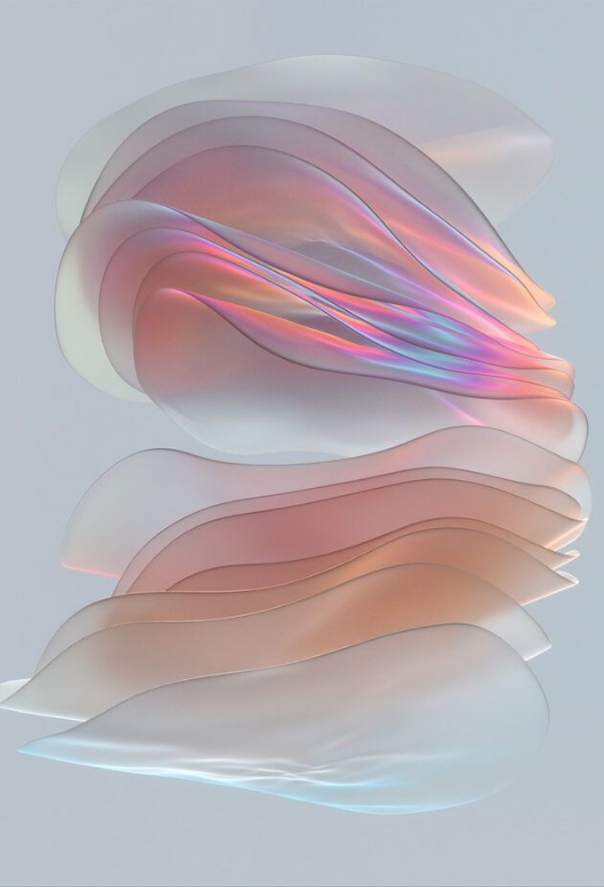
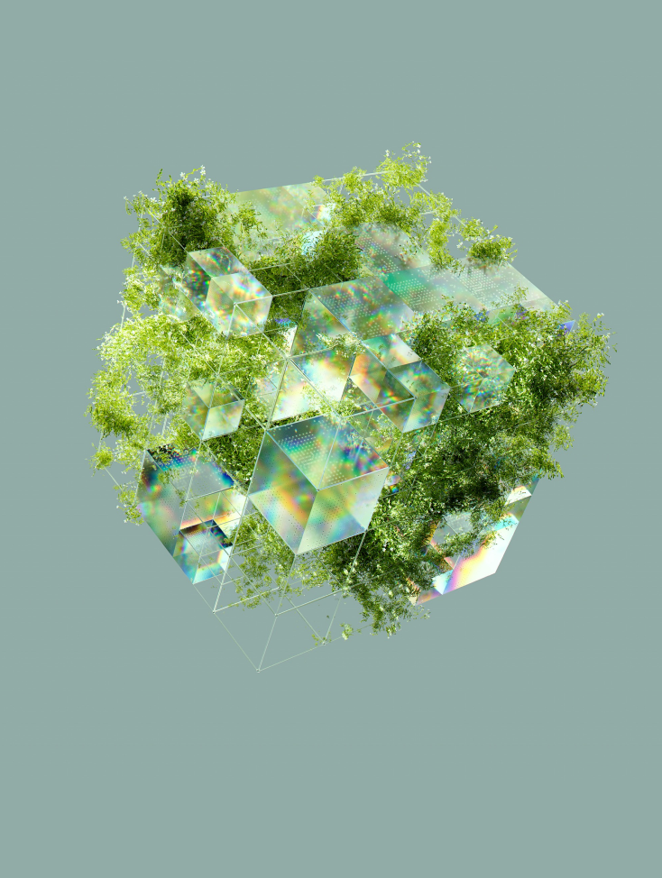

Home & Connected care
Connected, personalised care at home
Healthcare isn’t short on technology, it’s short on connection. Across every stage of the customer journey and every horizon of transformation, the healthcare landscape is facing challenges such as Through partnering with Cognizant Moment, we're bridging healthcare’s connection gap to deliver measurable impact across product, innovation, data, compliance, and core operations.
Across the healthcare industry and market, three themes are redefining what's possible, alongside the organisation's own experience — powering growth, innovation and adoption.
Connected, personalised care at home
AI: from hype to targeted, operational value

From technology to governance, trust and adoption
Demand for age care
Platform fragmentation and legacy sprawl
Regulatory overhead and compliance burdens
Competitive pressure for AI enabled tools
The organisation operates across aged care, primary care, hospital care and virtual health services. The business faced mounting pressure from evolving regulations, fragmented technology landscapes, growing demand for AI-enabled experiences, and rising customer expectations.
The challenge was not improving individual products. It was creating the conditions for future innovation while supporting today's operational realities.
Challenge
Administrative burden
Shift
Ensuring conformance, audit and clinical safety of healthcare products is compliant and fit for purpose in an increasingly regulated environment.
Challenge
Vulnerable individuals / major national crises
Shift
Providing integrated care where relief matters most by increasing accessibility of digital health support.
Challenge
Fragmented data
Shift
Creating the data infrastructure and AI capabilities needed to unlock a more connected, intelligent healthcare ecosystem.
The organisation operates across aged care, primary care, hospital care and virtual health services. The business faced mounting pressure from evolving regulations, fragmented technology landscapes, growing demand for AI-enabled experiences, and rising customer expectations. The challenge was not improving individual products. It was creating the conditions for future innovation while supporting today's operational realities.

The Past
The Present
The Future
$2.5M
Estimated year one opportunity identified through the Snowflake proof of concept
<10s
To generate clinical summaries using agentic AI orchestration
Multiple products
Data unified across the organisation's product ecosystem in a single proof of concept
Directly validated
Outputs confirmed directly with healthcare professionals, not assumed
Because the future of care isn't just intelligent. It's connected
Our partnership with this healthcare provider demonstrates what becomes possible when experience design is treated as a strategic lever for transformation. Not just improving products—but strengthening trust, enabling innovation, and helping create a more connected healthcare future.